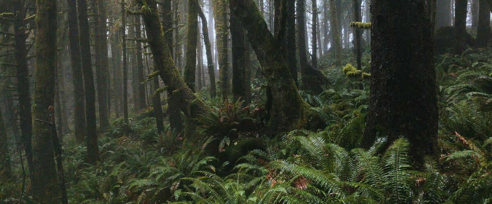
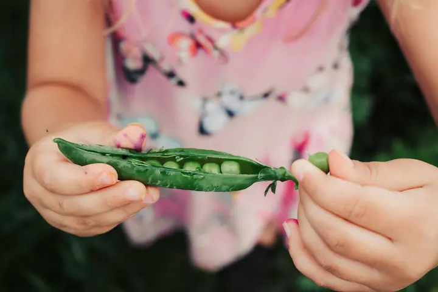
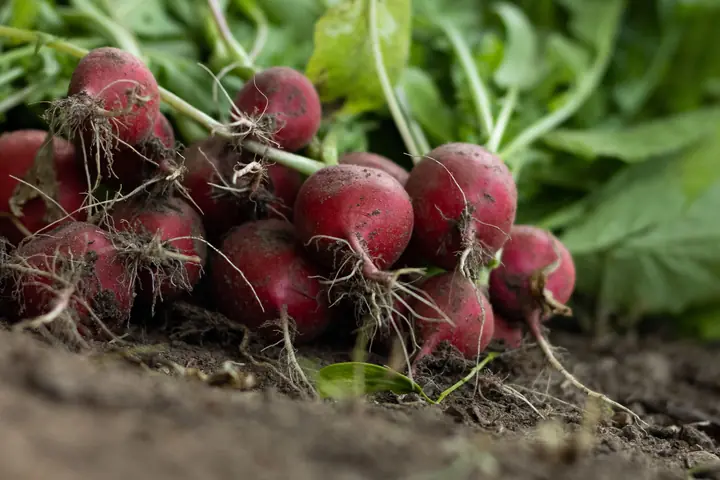

Northwest gardens · 40 plants
Plants for shade
Most vegetables want six or more hours of direct sun, but a shady Northwest yard isn't a lost cause. Leafy crops, many herbs and a long list of native plants grow in part shade, which usually means three to six hours of direct sun or bright, dappled light under high branches.
Easy ones to start with

PeasEasy Full sun 2 inches apart along a trellis
RadishesEasy Full sun 1 inch apart (thin to 2 inches) LettuceEasy
Full sun in spring
8 to 10 inches apart for heads
LettuceEasy
Full sun in spring
8 to 10 inches apart for heads KaleEasy
Full sun to part shade
18 inches apart
KaleEasy
Full sun to part shade
18 inches apart
Tips for a shady garden
Leaves are the part shade-tolerant crops grow best: lettuce, chard, kale and other greens. Fruit and roots slow down in shade, so expect smaller harvests of berries and root crops. Deep shade under evergreens suits natives like sword fern, salal and Oregon grape far better than any vegetable.
Shade also means slower-drying soil and more slugs, so give shady beds good drainage, space plants for airflow and start slug control early. In hot eastern valleys, afternoon shade is a gift for lettuce, spinach and other greens that bolt in heat.
Salad greens
- Lettuce Full sun in spring; afternoon shade in summer
- Spinach Full sun to part shade
- Arugula Full sun to part shade
- Swiss chard Full sun to part shade
- Mâche Full sun to part shade
Cabbage family
- Kale Full sun to part shade
- Bok choy Full sun to part shade
- Collards Full sun to part shade
- Mustard greens Full sun to part shade
Root vegetables
Peas and beans
Herbs
- Cilantro Full sun; afternoon shade in summer
- Parsley Full sun to part shade
- Chives Full sun to part shade
- Mint Full sun to part shade
- Lemon balm Full sun to part shade
Berries
- Hardy kiwi Full sun to light shade
- Gooseberries Full sun to part shade
- Elderberries Full sun to part shade
Perennial vegetables
Native plants
- Huckleberries Part shade to full sun
- Oregon grape Full sun to full shade
- Red-flowering currant Full sun to part shade
- Serviceberry Full sun to part shade
- Camas Full sun to light shade
- Thimbleberry Part shade to full sun
- Salmonberry Part shade to full sun
- Salal Part shade; full sun on the coast
- Kinnikinnick Full sun to light shade
- Western columbine Full sun to part shade
- Douglas aster Full sun to part shade
- Pacific ninebark Full sun to part shade
- Sword fern Part to full shade
- Oregon iris Full sun to light shade
Flowers
Gardening in shade
Read your shade first
Watch the spot on a sunny day in June and note when direct sun reaches it and when it leaves. Morning sun with afternoon shade suits far more plants than the reverse, because the afternoon is when heat and drying are strongest.
Shade from a building is usually brighter than shade under evergreens, which also take water from the soil. Under big conifers, the ground can stay dry all summer even after a wet spring, so choose plants that handle dry shade there.
Make the most of the light
Grow leafy crops where you get three to six hours of sun, and keep fruiting crops like tomatoes and squash for your sunniest spot or a pot you can move. Light-colored walls and fences bounce extra light into a shady corner.
Space plants a little wider than usual. Shady beds stay damp longer, and better airflow helps leaves dry out, which means fewer slugs and less leaf disease.
Expect slower growth
In shade, the same crop takes longer to reach harvest size, so plant a little earlier in spring where your dates allow and sow fall greens on the early side. Harvest leaves young and often rather than waiting for big plants.
Natives that evolved under Northwest forests, like sword fern, salal and Oregon grape, don't mind the lower light at all. Mixing them into the shadiest parts of a yard leaves the brighter spots for food.
Common questions
What vegetables grow in shade?
Leafy crops are the best bet: lettuce, spinach, chard, kale, collards, arugula and mustard greens grow in part shade. Peas and some herbs manage too. Fruiting crops like tomatoes, squash and peppers need full sun.
How many hours of sun is part shade?
Usually three to six hours of direct sun a day, or bright, filtered light all day. Under three hours is full shade, where natives like sword fern and salal do better than vegetables.
What native plants grow in dry shade under trees?
Sword fern, salal, Oregon grape and evergreen huckleberry all handle the dry shade under Northwest conifers once established. Water them through their first two summers.